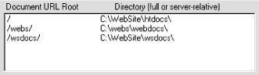

|
Chapter 26 WebSite Server Configuration |
 |

|
Chapter 26 WebSite Server Configuration |
|
The Identity page of Server Admin (shown in is used for multi-homed or virtual servers' settings for WebSite. Setting up differently named and addressed sites on the same computer and server is a complex issue and is not discussed in detail in this book. However, the Windows platforms are quite capable of supporting multiple IP addresses on the same machine. Windows NT supports multiple IP addresses using a single or multiple adapters. Windows 95 supports multiple IP addresses only with multiple adapters--one IP address per adapter. The WebSite server can support an unlimited number of IP addresses, or as many as the operating system can.
![[Graphic: Figure 26-3]](figs/wm_2403.gif)
WebSite handles multiple virtual servers in a rather elegant way by using unique "nicknames" for each address. When WebSite receives a request for a specific IP address, it prefixes the URL with that address's nickname. Document and CGI mapping are critically important under this scheme, and URLs for each virtual server must be mapped using the nickname. The use of the nickname is of no concern to your users. They simply request URLs using whatever IP address or hostname they require.
WebSite gives you an easy way and a hard way to set up virtual servers. Both paths begin on the Identity page of Server Admin. When you click the Multiple Identities box, an alert box pops up to tell you that IP addresses have been added to the server's configuration. Press OK and the page changes to show all the IP addresses on the system in the pulldown list box. The first address shown is always 127.0.0.1, localhost. You must configure this address just like any other virtual server that you set up. To set up a new IP address, select it from the list and press the Wizard button. The Identity Wizard will then appear and ask you to supply information about the new address. The Identity Wizard automates the setup of nicknames and documents and CGI mapping for you. It will also create new directories if you wish to use them for the new web. Using the Wizard is the easy way.
The hard way is the path you take if you do not press the Wizard button after selecting the new address to be configured. You must then provide the fully qualified domain name for the new address, the URL prefix you wish to use (it must begin with a slash /), and the name of an access log file, if you don't wish to use the main access file. You must supply .log with the access log filename; WebSite will not add it automatically.
Once you have filled in all of the fields, press the Update button. Follow the same steps to configure any other new addresses you may have. When all new addresses are set up, press Apply.
Filling in the Identity page is only part of manually setting up a new IP address. You now have to go to the Mapping page and create mappings for the new address by using its nickname. Make sure you use the address' nickname in front of every URL path you map. For example, a new virtual server has been set up on the Identity page with the server name webs.provider.com and the nickname /webs. shows the Document URL mappings from the Mapping page with the document root directory set for /webs.

All mapped URLs for that server must begin with /webs/. CGI mappings also must be mapped using the nicknames. Keep in mind that URLs mapped by nicknames for different virtual servers can use the same physical directory. This will probably be the case for some of your CGI programs.
|
 |
|
| Mapping |  |
Directory Listings |